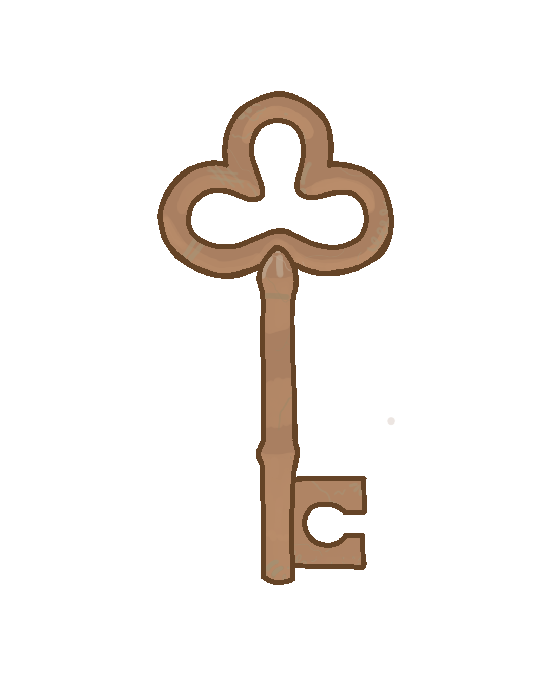

Descripción
Las llaves doradas emiten un brillo pulsante con una estela luminosa y aparecen en puntos estratégicos del nivel. Al recogerlas, producen un tono místico y suave. Son esenciales para liberar a los amigos atrapados y deben llevarse hasta el final.
Visualización en 3D
Usa el mouse para rotarlo y hacer zoom.